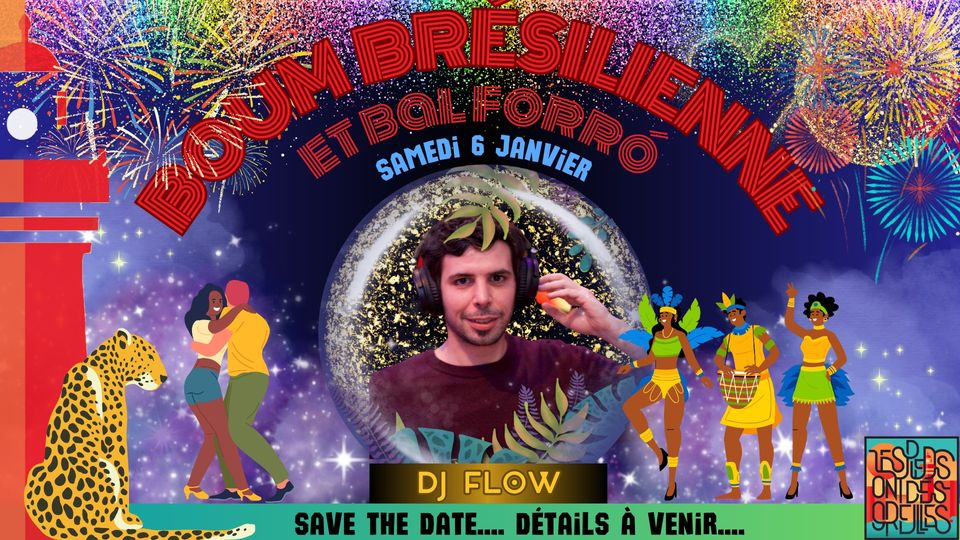

BOUM BRÉSILIENNE FORRÓ avec DJ FLOW à Saint-Nazaire

Après les stages de danse, on poursuit le soir avec une BOUM Brésilienne principalement FORRÓ.
Soit dit en passant, pour qui ne connaît pas encore le forró, c’est une musique et danse à deux, festive, joyeuse et langoureuse du Nordeste. Venez découvrir!
La musique sera assurée par DJ FLOW, connu pour ses sets endiablés qui font danser les foules de la capitale jusqu’au bout de la nuit. Enfilez vos plus belles tenues à paillettes et préparez-vous pour une soirée de danse inoubliable, pleine de rythmes brésiliens entraînants.
LE PROGRAMME
🌞13h30-18h : Stages de danse avec Marion Lima c’est ici : https://fb.me/e/7pOJmNxCD
🌞20h30 initiation Forró par l’Association Les Pieds Ont Des Oreilles
🌜🫧🌸💥BOUM💥🌸🫧🌛
★21h – 1H ★
🔥DJ FLOW🔥
Flo découvre le forró en 2015 après être tombé sur l’album “Cada um belisca um pouco”. Le coup de foudre est immédiat et depuis il y voue une passion débordante.
Il débute en devenant danseur, puis commence à partager sa collection de musique en 2018 en s’occupant des kiosques Forró parisiens. Très vite, il passe derrière les platines en devenant un des Djs réguliers du Forrobodo où il enflamme la piste de danse avec son style de musique joyeux et festif, qui capture parfaitement l’essence populaire de cette culture.
INFOS PRATIQUES
💥LIEU : Café/bar L’R du temps, 6 Rue François Marceau, 44600 Saint-Nazaire
💥RESTAURATION : planche apéro sur place
💥 Réservation:
Pour la Boum, pas besoin de réserver ENTRÉE LIBRE !
Pour les stages, la billetterie, c’est par là : https://www.helloasso.com/associations/les-pieds-ont-des-oreilles/evenements/boum-bresilienne-forro-et-stages-de-danse-du-nordeste
INFOS ET CONTACT
lespiedssontdesoreilles@gmail.com
Tel: 0660401517